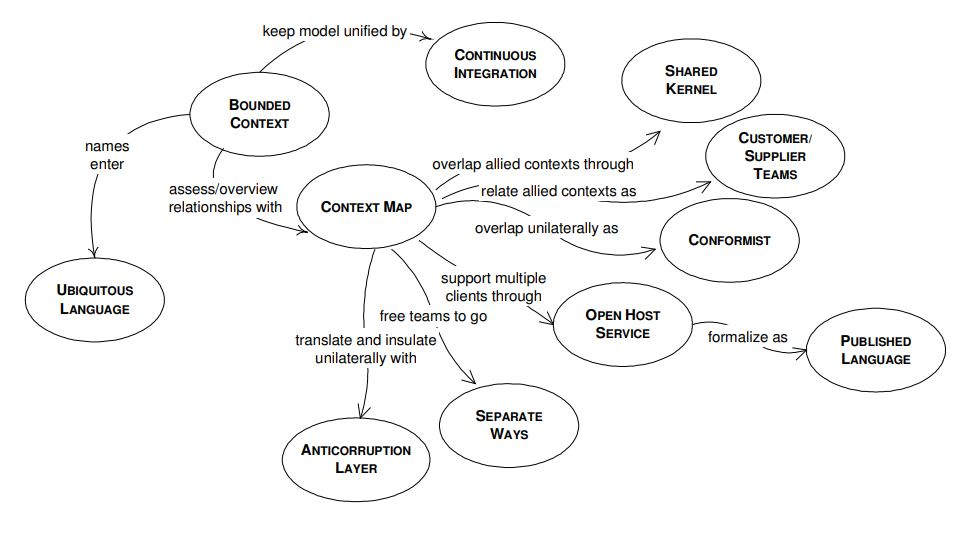
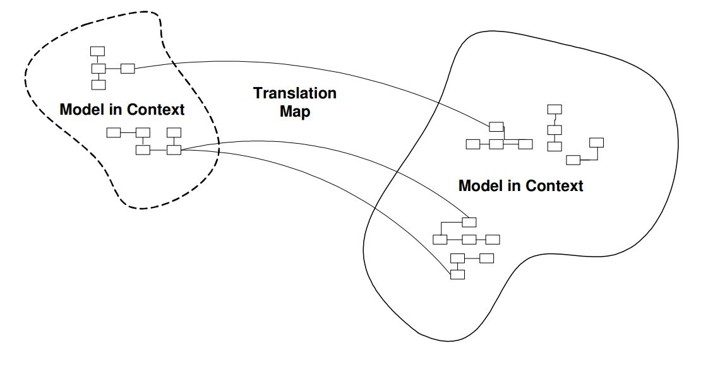
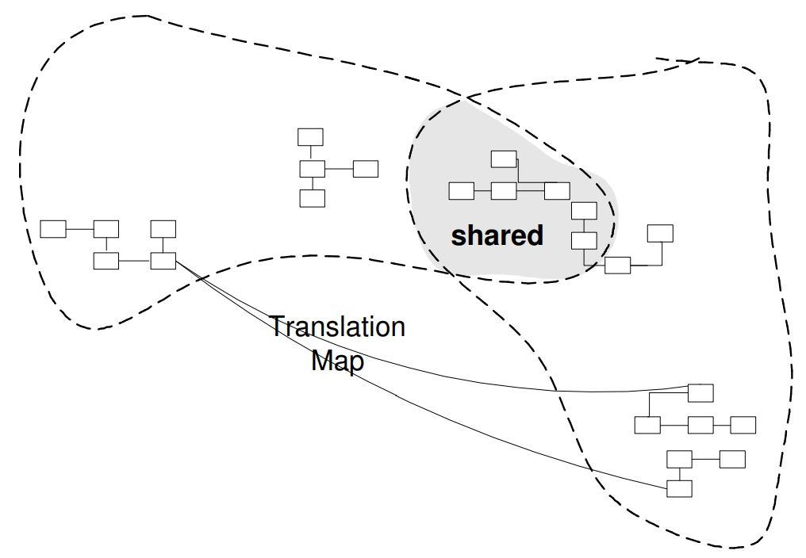

Preservando A Integridade Do Modelo
Este capítulo trata de grandes projetos que exigem os esforços combinados de várias equipes. Somos confrontados com um conjunto diferente de desafios quando várias equipas, sob gestão e coordenação diferentes, são colocadas na tarefa de desenvolver um projeto. Projetos corporativos são geralmente grandes projetos, que empregam várias tecnologias e recursos. A concepção de tais projetos ainda deve ser baseada em um modelo de domínio, e precisamos tomar as medidas adequadas para garantir o sucesso do projeto.
Quando várias equipes trabalham em um projeto, o desenvolvimento de código é feito em paralelo, sendo atribuída a cada equipe uma parte específica do modelo. Essas partes não são independentes, mas estão mais ou menos interconectadas. Todos eles começam com um grande modelo e recebem uma parte dele para implementar. Digamos que uma das equipes criou um módulo e o disponibilizou para outras equipes usá-lo. Um desenvolvedor de outra equipe começa a usar o módulo e descobre que está faltando alguma funcionalidade necessária para seu próprio módulo. Ele adiciona a funcionalidade necessária e faz o check-in do código para que possa ser usado por todos. O que ele pode não perceber é que esta é realmente uma mudança do modelo, e é bem possível que essa mudança interrompa a funcionalidade do aplicativo. Isso pode acontecer facilmente, pois ninguém se dá ao trabalho de entender completamente todo o modelo. Todo mundo conhece seu próprio quintal, mas outras áreas não são conhecidas com detalhes suficientes.
É tão fácil começar de um bom modelo e progredir em direção a um inconsistente. O primeiro requisito de um modelo é ser consistente, com termos invariáveis e sem contradições. A consistência interna de um modelo é chamada de unificação. Um projeto empresarial pode ter um modelo cobrindo todo o domínio da empresa, sem contradições e termos sobrepostos. Um modelo empresarial unificado é um ideal que não se realiza facilmente e, às vezes, nem vale a pena tentar. Tais projetos precisam do esforço combinado de muitas equipes. As equipes precisam de um grande grau de independência no processo de desenvolvimento, pois não têm tempo para se reunir e discutir constantemente o projeto. A coordenação dessas equipes é uma tarefa assustadora. Eles podem pertencer a departamentos diferentes e ter gerenciamento separado. Quando o design do modelo evolui parcialmente de forma independente, estamos diante da possibilidade de perder a integridade do modelo. Preservar a integridade do modelo esforçando-se para manter um grande modelo unificado para todo o projeto corporativo não funcionará. A solução não é tão óbvia, porque é o oposto de tudo o que aprendemos até agora. Em vez de tentar manter um grande modelo que vai desmoronar mais tarde, devemos conscientemente dividi-lo em vários modelos. Vários modelos bem integrados podem evoluir de forma independente desde que obedeçam ao contrato a que estão vinculados. Cada modelo deve ter uma borda claramente delimitada e os relacionamentos entre os modelos devem ser definidos com precisão.
Apresentaremos um conjunto de técnicas utilizadas para manter a integridade do modelo. O desenho a seguir apresenta essas técnicas e a relação entre elas.
Bounded Context
Cada modelo tem um contexto. Quando lidamos com um único modelo, o contexto está implícito. Não precisamos defini-lo. Quando criamos um aplicativo que deve interagir com outro software, por exemplo, um aplicativo legado, fica claro que o novo aplicativo tem seu próprio modelo e contexto, e eles são separados do modelo legado e seu contexto. Eles não podem ser combinados, misturados ou confundidos. Mas quando trabalhamos em um grande aplicativo corporativo, precisamos definir o contexto para cada modelo que criamos.
Vários modelos estão em jogo em qualquer grande projeto. No entanto, quando o código baseado em modelos distintos é combinado, o software se torna problemático, não confiável e difícil de entender. A comunicação entre os membros da equipe torna-se confusa. Muitas vezes não é claro em que contexto um modelo não deve ser aplicado.
Não existe uma fórmula para dividir um modelo grande em menores. Tente colocar em um modelo aqueles elementos que estão relacionados e que formam um conceito natural. Um modelo deve ser pequeno o suficiente para ser atribuído a uma equipe. A cooperação e a comunicação da equipe são mais fluidas e completas, o que ajuda os desenvolvedores que trabalham no mesmo modelo. O contexto de um modelo é o conjunto de condições que precisam ser aplicadas para garantir que os termos usados no modelo tenham um significado específico.
A ideia principal é definir o escopo de um modelo, traçar os limites de seu contexto, então fazer o máximo possível para manter o modelo unificado. É difícil manter um modelo puro quando ele abrange todo o projeto corporativo, mas é muito mais fácil quando ele é limitado a uma área específica. Defina explicitamente o contexto no qual um modelo se aplica. Defina explicitamente limites em termos de organização da equipe, uso em partes específicas do aplicativo e manifestações físicas, como bases de código e esquemas de banco de dados. Mantenha o modelo estritamente consistente dentro desses limites, mas não se distraia ou se confunda com problemas externos.
Um Bounded Context (Contexto Limitado) não é um Módulo. Um Bounded Context fornece o quadro lógico dentro do qual o modelo evolui. Módulos são usados para organizar os elementos de um modelo, então o Bounded Context engloba o Módulo.
Quando equipes diferentes precisam trabalhar no mesmo modelo, devemos ter muito cuidado para não pisar nos calos uns dos outros. Temos que estar constantemente cientes de que mudanças no modelo podem quebrar a funcionalidade existente. Ao usar vários modelos, todos podem trabalhar livremente em sua própria peça. Todos conhecemos os limites do nosso modelo e ficamos dentro das fronteiras. Nós apenas temos que manter o modelo puro, consistente e unificado. Cada modelo pode suportar refatoração com muito mais facilidade, sem repercussões em outros modelos. O design pode ser refinado e destilado para atingir a máxima pureza.
Por exemplo, queremos criar um aplicativo de comércio eletrônico usado para vender coisas na Internet. Este aplicativo permite que os clientes se registrem e coletamos seus dados pessoais, incluindo números de cartão de crédito. Os dados são mantidos em um banco de dados relacional. Os clientes podem fazer login, navegar no site procurando mercadorias e fazer pedidos. O aplicativo precisará publicar um evento sempre que um pedido for feito, pois alguém terá que enviar o item solicitado. Também queremos construir uma interface de relatórios usada para criar relatórios, para que possamos monitorar o status das mercadorias disponíveis, o que os clientes estão interessados em comprar, o que não gostam, etc. No início começamos com um modelo que abrange todo o domínio do comércio eletrônico. Somos tentados a fazê-lo, porque afinal nos pediram para criar um grande aplicativo. Mas se considerarmos a tarefa com mais cuidado, descobrimos que o aplicativo de e-shop não está realmente relacionado ao de relatórios. Eles têm preocupações separadas, operam com conceitos diferentes e podem até precisar usar tecnologias diferentes. A única coisa realmente comum é que os dados do cliente e da mercadoria são mantidos no banco de dados, e ambos os aplicativos o acessam.
A abordagem recomendada é criar um modelo separado para cada um dos domínios, um para o comércio eletrônico e outro para os relatórios. Ambos podem evoluir livremente sem muita preocupação um com o outro, e até mesmo se tornarem aplicativos separados. Pode ser que o aplicativo de relatórios precise de alguns dados específicos que o aplicativo de comércio eletrônico deve armazenar no banco de dados, mas, caso contrário, eles podem crescer de forma independente.
É necessário um sistema de mensagens para informar o pessoal do armazém sobre os pedidos realizados, para que possam enviar a mercadoria comprada. O pessoal do correio usará um aplicativo que fornece informações detalhadas sobre o item comprado, a quantidade, o endereço do cliente e os requisitos de entrega. Não é necessário que o modelo de e-shop abranja ambos os domínios de atividade. É muito mais simples para o aplicativo de e-shop enviar objetos de valor contendo informações de compra para o depósito usando mensagens assíncronas. Definitivamente, existem dois modelos que podem ser desenvolvidos separadamente, e só precisamos garantir que a interface entre eles funcione bem.
Continuous Integration
Uma vez que um Bounded Context foi definido, devemos mantê-lo sólido. Quando várias pessoas estão trabalhando no mesmo Contexto Delimitado, há uma forte tendência de fragmentação do modelo. Quanto maior a equipe, maior o problema, mas apenas três ou quatro pessoas podem encontrar problemas sérios.
No entanto, dividir o sistema em contextos cada vez menores acaba perdendo um nível valioso de integração e coerência.
Mesmo quando uma equipe trabalha em um contexto limitado, há espaço para erros. Precisamos nos comunicar dentro da equipe para garantir que todos entendam o papel desempenhado por cada elemento no modelo. Se alguém não entender as relações entre os objetos, eles podem modificar o código de tal forma que entre em contradição com a intenção original. É fácil cometer tal erro quando não mantemos 100% de foco na pureza do modelo. Um membro da equipe pode adicionar código que duplica o código existente sem saber, ou pode adicionar código duplicado em vez de alterar o código atual, com medo de quebrar a funcionalidade existente.
Um modelo não é totalmente definido desde o início. Ele é criado e evolui continuamente com base em novos insights no domínio e feedback do processo de desenvolvimento. Isso significa que novos conceitos podem entrar no modelo e novos elementos são adicionados ao código. Todas essas necessidades devem ser integradas em um modelo unificado e implementadas de acordo com o código. É por isso que a Integração Contínua é um processo necessário dentro de um Contexto Limitado. Precisamos de um processo de integração para garantir que todos os novos elementos adicionados se encaixem harmoniosamente no restante do modelo e sejam implementados corretamente no código. Precisamos ter um procedimento usado para merge o código. Quanto mais cedo merge o código, melhor. Para uma única equipe pequena, as merges diárias são recomendadas. Também precisamos ter um processo de construção em vigor. O código merge precisa ser criado automaticamente para que possa ser testado. Outro requisito necessário é realizar testes automatizados. Se a equipe tiver uma ferramenta de teste e tiver criado um conjunto de testes, o teste poderá ser executado em cada compilação e quaisquer erros serão sinalizados. O código pode ser facilmente alterado para corrigir os erros relatados, porque eles são detectados antecipadamente e o processo de merge, compilação e teste é iniciado novamente.
A Integração Contínua é baseada na integração de conceitos no modelo, encontrando seu caminho até a implementação onde é testada. Qualquer inconsistência do modelo pode ser detectada na implementação. A Integração Contínua aplica-se a um Contexto Limitado, não é usada para lidar com relacionamentos entre Contextos vizinhos.
Context Map
Um aplicativo corporativo tem vários modelos e cada modelo tem seu próprio Contexto Limitado. É aconselhável usar o contexto como base para a organização da equipe. As pessoas da mesma equipe podem se comunicar mais facilmente e podem fazer um trabalho melhor integrando o modelo e a implementação. Embora cada equipe trabalhe em seu modelo, é bom que todos tenham uma ideia do quadro geral. Um Mapa de Contexto é um documento que descreve os diferentes Contextos Delimitados e as relações entre eles. Um Mapa de Contexto pode ser um diagrama como o abaixo, ou pode ser qualquer documento escrito. O nível de detalhe pode variar. O importante é que todos que trabalham no projeto o compartilhem e o entendam.
Não basta ter modelos unificados separados. Eles precisam ser integrados, pois a funcionalidade de cada modelo é apenas uma parte de todo o sistema. No final, as peças devem ser montadas juntas e todo o sistema deve funcionar corretamente. Se os contextos não estiverem claramente definidos, é possível que eles se sobreponham. Se as relações entre os contextos não forem esboçadas, há uma chance de que não funcionem quando o sistema estiver integrado.
Cada Contexto Delimitado deve ter um nome que deve fazer parte da Linguagem Ubíqua. Isso ajuda muito a comunicação da equipe quando se fala de todo o sistema. Todos devem conhecer os limites de cada contexto e o mapeamento entre contextos e código. Uma prática comum é definir os contextos, criar módulos para cada contexto e usar uma convenção de nomenclatura para indicar o contexto ao qual cada módulo pertence.
Nas páginas seguintes falamos sobre a interação entre diferentes contextos. Apresentamos uma série de padrões que podem ser usados para criar Mapas de Contexto onde os contextos têm papéis claros e seus relacionamentos são apontados. O Shared Kernel (Kernel Compartilhado) e o Customer-Supplier (Cliente-Fornecedor) são padrões com alto grau de interação entre contextos. Separate Ways (Modos Separados) é um padrão usado quando queremos que os contextos sejam altamente independentes e evoluam separadamente. Existem outros dois padrões que tratam da interação entre um sistema e um sistema legado ou externo, e eles são Open Host Services e Anticorruption Layers.
Shared Kernel

Quando a integração funcional é limitada, a sobrecarga de Continuous Integration (Integração Contínua) pode ser considerada muito alta. Isso pode ser especialmente verdade quando as equipes não têm a habilidade ou a organização política para manter o continuous integration, ou quando uma única equipe é simplesmente muito grande e difícil de gerenciar. Portanto, contextos delimitados separados podem ser definidos e várias equipes formadas.
Equipes descoordenadas trabalhando em aplicativos intimamente relacionados podem avançar por um tempo, mas o que eles produzem pode não se encaixar. Eles podem acabar gastando mais em camadas de tradução e adaptação do que gastariam em Continuous Integration em primeiro lugar, enquanto duplicam esforços e perdem os benefícios de uma Linguagem Ubíqua comum.
Portanto, designe algum subconjunto do modelo de domínio que as duas equipes concordem em compartilhar. É claro que isso inclui, junto com esse subconjunto do modelo, o subconjunto de código ou o design do banco de dados associado a essa parte do modelo. Essas coisas explicitamente compartilhadas têm um status especial e não devem ser alteradas sem consulta à outra equipe.
Integre um sistema funcional com frequência, mas um pouco menos do que o ritmo da Continuous Integration dentro das equipes. Durante essas integrações, execute os testes de ambas as equipes.
A finalidade do Shared Kernel é reduzir a duplicidade, mas ainda manter dois contextos separados. O desenvolvimento em um kernel compartilhado precisa de muito cuidado. Ambas as equipes podem modificar o código do kernel e precisam integrar as alterações. Se as equipes usarem cópias separadas do código do kernel, elas precisam mesclar o código o mais rápido possível, pelo menos semanalmente. Um conjunto de testes deve estar em vigor, para que todas as alterações feitas no kernel sejam testadas imediatamente. Qualquer alteração do kernel deve ser comunicada a outra equipe, e as equipes devem ser informadas, tornando-as cientes da nova funcionalidade.
Customer-Supplier (Cliente-Fornecedor)
Há momentos em que dois subsistemas têm uma relação especial: um depende muito do outro. Os contextos nos quais esses dois subsistemas existem são diferentes e o resultado do processamento de um sistema é alimentado no outro. Eles não têm um Kernel Compartilhado, porque pode não ser conceitualmente correto ter um, ou pode não ser tecnicamente possível para os dois subsistemas compartilharem código comum. Os dois subsistemas estão em uma relação Cliente-Fornecedor.
Voltemos a um exemplo anterior. Falamos anteriormente sobre os modelos envolvidos em um aplicativo de comércio eletrônico, que inclui relatórios e mensagens. Já dissemos que é muito melhor criar modelos separados para todos esses contextos, pois um único modelo seria um gargalo constante e fonte de contenção no processo de desenvolvimento. Supondo que concordemos em ter modelos separados, quais devem ser os relacionamentos entre o subsistema de compras na web e o de relatórios? O Kernel Compartilhado não parece ser a escolha certa. O subsistema provavelmente usará tecnologias diferentes para ser implementado. Um é uma experiência de navegador pura, enquanto o outro pode ser um aplicativo GUI rico. Mesmo que a aplicação de relatórios seja feita através de uma interface web, os principais conceitos dos respectivos modelos são diferentes. Pode haver alguma sobreposição, mas não o suficiente para justificar um Kernel Compartilhado. Então optamos por um caminho diferente. Por outro lado, o subsistema de e-shopping não depende em nada do subsistema de relatórios. Os usuários do aplicativo de e-shopping são clientes da web que procuram mercadorias e fazem pedidos. Todos os dados de clientes, mercadorias e pedidos são colocados em um banco de dados. E é isso. O aplicativo de e-shopping não está realmente interessado no que acontece com os respectivos dados. Enquanto isso, o aplicativo de relatórios está muito interessado e precisa dos dados salvos pelo aplicativo de e-shopping. Ele também precisa de algumas informações extras para realizar os serviços de relatórios que presta. Os clientes podem colocar alguma mercadoria na cesta e deixá-la cair antes do check-out. Os clientes podem visitar alguns links mais do que outros. Esse tipo de informação não tem significado para o aplicativo de e-shopping, mas pode significar muito para o de relatórios. Em seguida, o subsistema fornecedor deve implementar algumas especificações que são necessárias ao subsistema cliente. Esta é uma conexão entre os dois subsistemas.
Outro requisito está relacionado ao banco de dados utilizado, mais exatamente seu esquema. Ambos os aplicativos farão uso do mesmo banco de dados. Se o subsistema de e-shopping fosse o único a acessar o banco de dados, o esquema do banco de dados poderia ser alterado a qualquer momento para refletir suas necessidades. Mas o subsistema de relatórios também precisa acessar o banco de dados, portanto, precisa de alguma estabilidade de seu esquema. É impossível imaginar que o esquema do banco de dados não mude durante o processo de desenvolvimento. Isso não representará um problema para o aplicativo de e-shopping, mas certamente será um problema para o de relatórios. As duas equipes precisarão se comunicar, provavelmente terão que trabalhar juntas no banco de dados e decidir quando a mudança será realizada. Isso funcionará como uma limitação para o subsistema de relatórios, porque essa equipe preferiria fazer a mudança rapidamente e seguir em frente com o desenvolvimento, em vez de esperar pelo aplicativo de e-shopping. Caso a equipe de e-shopping tenha direito de veto, pode impor limites às alterações a serem feitas no banco de dados, prejudicando a atividade da equipe de relatórios. Se a equipe de e-shopping puder agir de forma independente, eles quebrarão os acordos mais cedo ou mais tarde e implementarão algumas mudanças para as quais a equipe de relatórios não está preparada. Esse padrão funciona bem quando as equipes estão sob a mesma gestão. Isso facilita o processo de tomada de decisão e cria harmonia.
Quando nos deparamos com tal cenário, devemos começar a agir. A equipe de relatórios deve desempenhar o papel de cliente, enquanto a equipe de e-shopping deve desempenhar o papel de fornecedor. As duas equipes devem se reunir regularmente ou mediante solicitação, e conversar como um cliente faz com seu fornecedor. A equipe do cliente deve apresentar seus requisitos, enquanto a equipe do fornecedor deve fazer os planos de acordo. Embora todos os requisitos da equipe do cliente tenham que ser atendidos no final, o cronograma para isso é decidido pela equipe do fornecedor. Se alguns requisitos são considerados realmente importantes, eles devem ser implementados mais cedo, enquanto outros requisitos podem ser adiados. A equipe do cliente também precisará de informações e conhecimentos a serem compartilhados pela equipe do fornecedor. Esse processo flui em um sentido, mas é necessário em alguns casos.
A interface entre os dois subsistemas precisa ser definida com precisão. Um conjunto de testes de conformidade deve ser criado e usado para testar a qualquer momento se os requisitos da interface são respeitados. A equipe do fornecedor poderá trabalhar sem reservas em seu projeto porque a rede segura do conjunto de testes de interface os alerta sempre que houver um problema.
Estabelecer uma relação cliente/fornecedor clara entre as duas equipes. Nas sessões de planejamento, faça com que a equipe do cliente desempenhe um papel de cliente para a equipe do fornecedor. Negociar e orçar tarefas para os requisitos do cliente para que todos entendam o compromisso e o cronograma.
Desenvolver em conjunto testes de aceitação automatizados que validarão a interface esperada. Adicione esses testes ao conjunto de testes da equipe do fornecedor, para serem executados como parte de sua integração contínua. Esse teste liberará a equipe do fornecedor para fazer alterações sem medo de efeitos colaterais no aplicativo da equipe do cliente.
Conformist (Conformista)